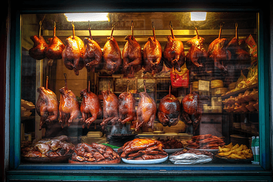

广府粤菜的世界
粤菜作为中国四大菜系之一，素有“食在广州”之美誉。广东地处亚热带，物产丰饶、依山傍海，自古便拥有丰富新鲜的食材，孕育出享誉海内外的精湛餐饮文化。
代表性经典美食
-
早茶与点心
一盅两件、叹茶品点是广府人惬意的生活习俗。晶莹剔透的水晶虾饺包裹饱满弹嫩的虾仁，香甜酥软的叉烧包，以及轻轻咬开便有金黄内馅缓缓涌出的流沙包，精致丰富，妙趣横生。揭开壶盖示意续水更展现了深厚的茶桌礼仪。

-
广式烧味
专用烤炉精制而成的蜜汁叉烧、深井烧鹅与金牌脆皮烧肉。橱窗中油亮诱人，皮脆如琉璃、肉嫩多汁，师傅手起刀落切盘上桌，搭配酸梅酱或特制咸甜蘸料，回味无穷。

-
干炒牛河
以猛火快炒牛肉与爽滑河粉，堪称广东人的灵魂家常。这道菜极度考验厨师对火候与翻锅的功力：油润而不腻、粉不断条、肉质鲜嫩且裹挟着迷人的镬气，是名厨技艺的试金石。

粤菜的风味哲学：清・鲜・嫩・滑
粤菜追求食材本味的极致发挥。“清”指汤水澄澈清冽；“鲜”指多用活鱼时鲜，不靠重料掩盖；“嫩”指精准控温控时，肉质细嫩多汁；“滑”指如同云吞澄粉般入口顺滑，清淡中展现高雅意境。
老火靓汤的养生文化

俗话说“宁可食无菜，不可食无汤”。老火汤精选肉骨、时蔬与枸杞、淮山等药食同源食材，文火慢煨三小时以上。食材精华尽融于汤水之中，润燥温补，是每个广府家庭代代相传的温情味道。
总结
“食在广州”名副其实。粤菜以其敬畏自然、追求原味本真的人文情怀与卓越匠心，历久弥新，深受世界食客的赞誉。